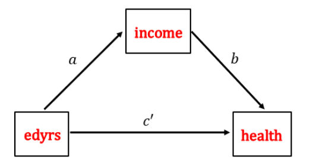

- Many research questions require comparing predictions or effects across models
- E.g., Does a male scientist need as many publications to obtain tenure as a female scientist?
- E.g., Can the relationship between two variables be explained by the addition of another variable?
- Fit a model to determine the initial relationship
- Fit a second model that accounts for additional covariates
- Could conceptually be a mediator or confounder
- E.g., Imagine a reviewer asks whether a different operationalization of the focal IV changes the effect of interest
- Two models are fit in which one uses the original operationalization and the other uses the alternative
- E.g., Compare an IV’s effect across different samples/groups
- 1970s sample vs 2020s sample
- Model for men and model for women
*Examples from Mize, Doan, and Long 2019
Overview of cross-model comparisons
- I use the term cross-model comparisons as a general way to refer to comparing predictions and/or effects in one model to the predictions and/or effects in another model(s)
- Statistical mediation is a common cross-model comparison; I use mediation* to illustrate the difficulties of comparing predictions/effects across categorical outcome models
- The coefficients are not independently identified and “rescale” across models
- The β coefficients cannot be compared directly across models
- Predicted probabilities (and thus, marginal effects) are identified and do not rescale across models
*Note there is a growing body of work on causal mediation analysis I highly recommend learning more about (e.g., Imai et al. 2010; Keele 2015; Rudolph et al. 2018)
- For the purposes of this class, I am showing the “traditional” approach often credited to Baron and Kenny 1986 JPSP. See Zhao, Lynch, and Chen 2010 for an excellent overview
- The issues discussed here apply in both cases, and you can use MEs within the causal framework
Cross-model comparisons in linear vs nonlinear models
- For linear models, can test the significance of a cross-model comparison as the difference in β coefficients across models
- For mediation, this is identical to calculating the significance of the indirect effect
- For nonlinear models, need a special approach to test for significant differences across multiple models. Two solutions:
- Separate β coefficient into two parts:
- Part representing explained variation (what you want)
- Part representing model rescaling (a nuisance)
- Combine multiple model estimates and compare marginal effects

Back to top